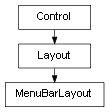

class cymel.ui.menu.MenuBarLayout¶

- class cymel.ui.menu.MenuBarLayout(*args, **kwargs)¶
ベースクラス:
Layoutmel UI の menuBarLayout ラッパークラス。
withで setParent が行える。Maya 標準コマンドに基づき、 レイアウトされたメニューを得るには
childrenではなくmenusなどのメソッドを用いなければならない。 とはいえMenuからはControl.parentでレイアウトを取得出来る。Methods:
clear()子とメニューを全て削除する。
menu([idxOrPath])メニューを得る。
メニューの名前リストを得る。
menus()メニューのリストを得る。
numMenus()メニューの数を得る。
Methods Details:
- UICMD()¶
- clear()¶
子とメニューを全て削除する。